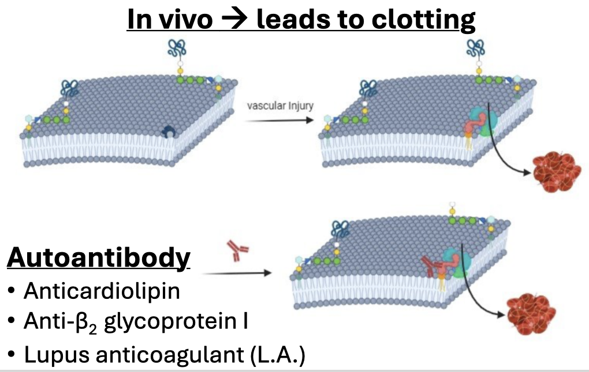

Detect prolongation
Start with a phospholipid-poor reagent designed to expose interference.
Case 4 · Coagulation curriculum
Follow the phospholipid trail—from an unprovoked DVT to a defensible laboratory interpretation.
Phospholipid dependence
Start with a phospholipid-poor reagent designed to expose interference.
Use pooled normal plasma to explore inhibitor and deficiency patterns.
Demonstrate shortening when excess phospholipid is supplied.
This module is for education. Apply local validated cutoffs, reagent-specific algorithms, and anticoagulant-interference policies in practice.
Section 2 of 8
By the end, you should be able to turn a sequence of clotting times into a precise, appropriately qualified conclusion.
Verify specimen suitability and identify preanalytical threats to LA detection.
Explain why two mechanistically different phospholipid-dependent assay systems are used.
Calculate and interpret normalized DRVVT and SCT ratios using laboratory cutoffs.
Distinguish phospholipid-dependent inhibition from deficiency, a specific inhibitor, and drug effect.
Separate a positive LA result from classification of antiphospholipid syndrome.
Recognize when apixaban makes clot-based LA testing uninterpretable.
Does the pattern demonstrate phospholipid-dependent inhibition—and have competing explanations been adequately excluded?
Section 3 of 8
“Lupus anticoagulant” describes a functional laboratory effect. It is neither a single antibody nor, by itself, a diagnosis of lupus or APS.

A functional clot-based phenomenon detected with phospholipid-dependent assays.
A solid-phase immunoassay detecting antibody binding; not a clotting-time test.
A solid-phase immunoassay directed against β2-glycoprotein I.
Observation
A prolonged aPTT is a clue, not a diagnosis. The differential includes:
Heparin, warfarin, low-molecular-weight heparin, and direct oral anticoagulants can create false-positive or false-negative LA patterns. Whenever feasible, establish drug exposure before interpreting clot-based testing.
Section 4 of 8
Build the interpretation in layers. No single abnormal result is sufficient.
| Check | Finding | Interpretive note |
|---|---|---|
| Tube fill | Acceptable | Preserves the intended citrate-to-plasma ratio. |
| Visible clot / hemolysis | None | No obvious specimen compromise. |
| Platelet-poor plasma | Acceptable | Residual platelet phospholipid can neutralize LA and cause a false negative. |
| Hematocrit | 41% | No citrate adjustment required. |
| Anticoagulant exposure | None documented | Interpretation is not confounded by known therapy. |
Russell viper venom directly activates factor X. The assay largely bypasses the intrinsic and extrinsic pathways and challenges the common pathway under phospholipid-limited conditions.
Silica activates the contact pathway. A phospholipid-poor screen and phospholipid-rich confirm reagent offer a mechanistically different route to the same analytical question.
Lupus anticoagulants are heterogeneous. An antibody may affect one reagent or pathway more strongly than another, so complementary systems improve detection.
Training cutoff shown: screen ratio ≤1.20. Clinical laboratories must establish and validate their own cutoffs.
Section 5 of 8
The screen–mix–confirm sequence asks three related but distinct questions.
Screen may be prolonged; addition of normal plasma typically supplies the missing factor and corrects the result.
Screen is prolonged; mixing may remain prolonged; excess phospholipid produces characteristic shortening.
Mixing may fail to correct, but excess phospholipid should not characteristically correct both DRVVT and SCT.
A 1:1 mix also dilutes the antibody by roughly half. A weak LA can appear to correct; therefore, correction does not completely exclude LA.
Section 6 of 8
Commit to each decision before the next laboratory layer is revealed.
The patient is taking apixaban. The specimen produces a DRVVT screen-to-confirm ratio of 1.35 and an apixaban-calibrated anti-Xa result of 124 ng/mL.
You identified phospholipid-dependent inhibition and avoided an uninterpretable drug-confounded conclusion.
Section 7 of 8
Ten questions with immediate explanations. Your score and module progress remain on this device.
Section 8 of 8
A defensible LA interpretation is a pattern plus exclusions—not a single prolonged clotting time.
“Lupus anticoagulant detected. The DRVVT and silica clotting-time assay systems demonstrate phospholipid-dependent inhibition. No significant heparin effect was detected. Correlate with anticoagulant exposure, clinical findings, and anticardiolipin and anti-β2-glycoprotein I antibody results.”
Reset the clinical sequence and work through the interpretation once more.
Retake the knowledge check with a fresh question sequence.
Educational use only. Built from the supplied “Case 4: Lupus Anticoagulant 1” teaching document. Laboratory cutoffs and algorithms are reagent- and institution-specific.